docs/examples/example1.py 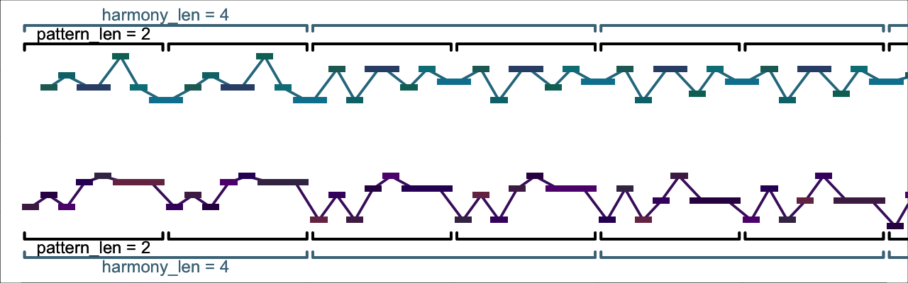
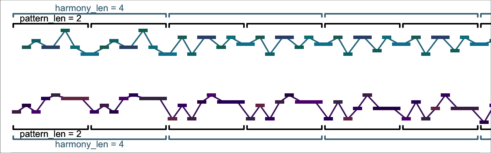 This script is a tool for musical composition. Here are a few examples of things I have made using it:
TODO add more videos here
The gist of how the script works goes as follows:
You can then hear the results as a midi file. The script also provides a few tools (see Filters and Transformers) for reshaping the results.
The script requires Python >= 3.8 and has the following Python dependencies:
These can be installed by running pip3 install -r requirements.txt in the script directory.
If you want the script to output music notation, then the following must be in your path:
The first two can be installed as follows:
brew install imagemagick # replace "brew" with your system package manager if not on macOS
pip3 install img2pdfVerovio installation instructions are here.
To quickly try the script out, you can run it with the default settings:
python3 efficient_rhythms.py
You can also try running it with randomized settings, although be warned that the results are sometimes strange:
python3 efficient_rhythms.py --random
There are many configurable settings that shape the output. Full documentation is available in settings.html. But a gentler introduction is provided in the next section.
The basic settings that control the script are
rhythm_len: the length of the basic rhythmpattern_len: the length of the initial patternharmony_len: the length of each harmony (i.e., chord)For instance, in docs/examples/example1.py, the initial pattern is two beats long (i.e., pattern_len = 2). Each harmony, however, is four beats (harmony_len = 4). Thus you can see that the pattern repeats twice on each harmony, and is then adjusted to fit the next harmony.1
Example: docs/examples/example1.py 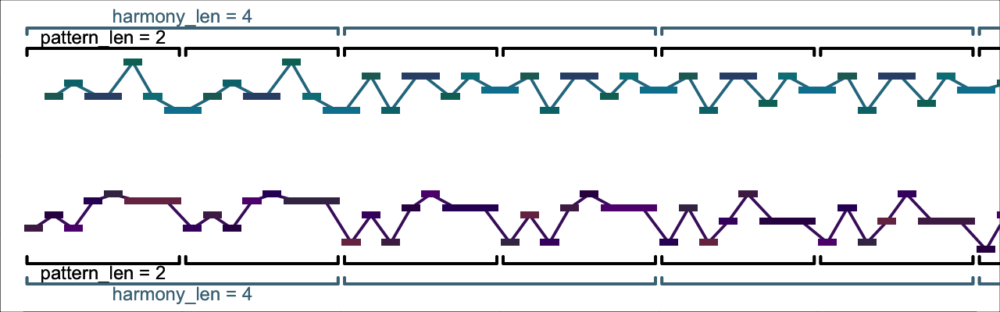
Whenever rhythm_len is not set explicitly, it is implicitly assigned the value of pattern_len. So in the example above, rhythm_len was implicitly assigned 2. In docs/examples/example2.py, in contrast, we set pattern_len = 4, but rhythm_len = 2. Thus, if you look and/or listen carefully, you’ll find that the same rhythm repeats twice on each harmony, but with different notes each time—the entire pattern of pitches takes four beats to repeat, and by the time it does, its pitches are somewhat different, having been adjusted to the new harmony.2
Example: docs/examples/example2.py 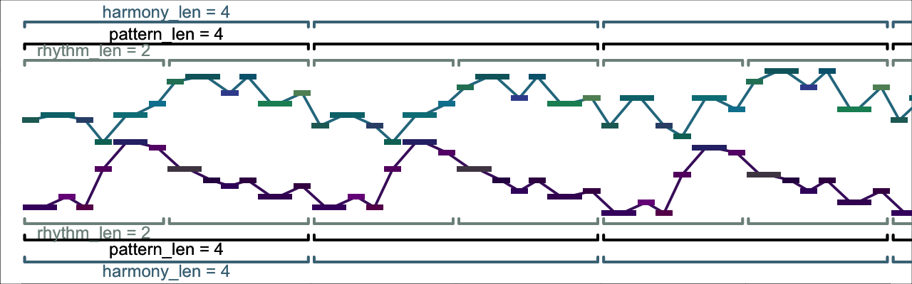
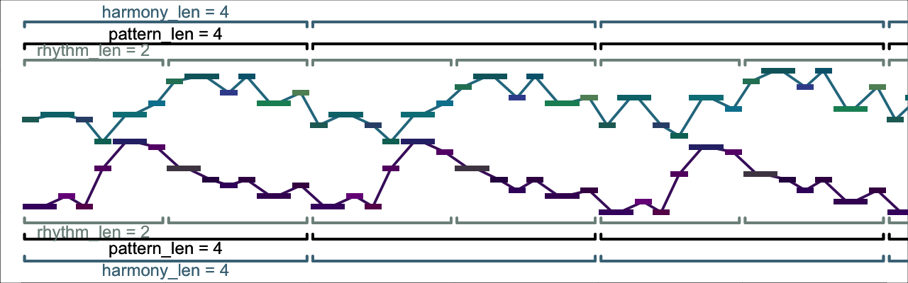
We aren’t constrained to have pattern_len be a whole multiple of rhythm_len. In docs/examples/example3.py, pattern_len is still 4, but rhythm_len = 1.5, so now every third time the rhythm occurs, it is truncated (a bit like a 3–3–2 tresillo pattern).
Example: docs/examples/example3.py
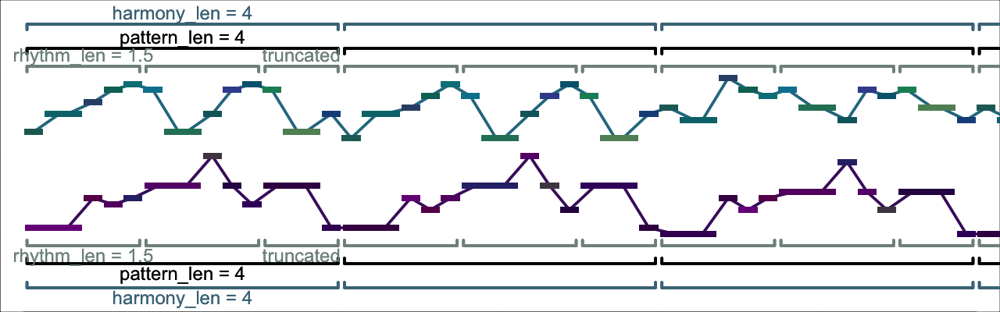
Up to now, we’ve always specified the same settings in both voices. But we need not do so! In the docs/examples/example4.py, the bottom voice again has rhythm_len = 1.5, but the top voice now has rhythm_len = 2.
Example: docs/examples/example4.py
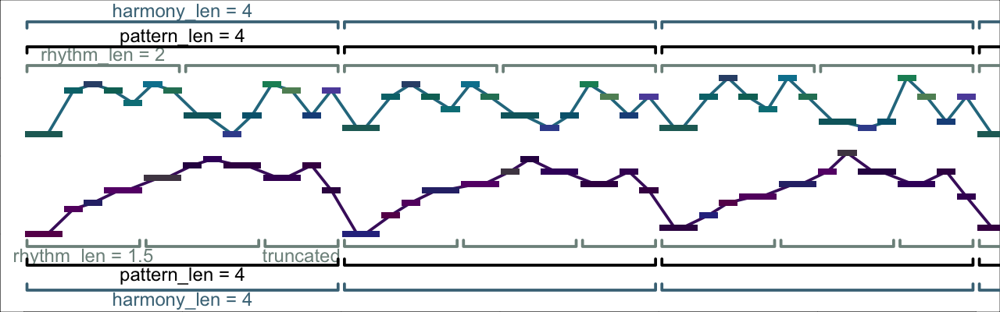
We can also have different values of pattern_len in each voice, as in docs/examples/example5.py. However, if we do so, the script has to work quite a bit harder to find a solution. To help it do so, I made its task a little easier by changing consonance_treatment from "all_attacks" to "none". Thus whereas in the previous examples, the simultaneously attacked notes all formed intervals like 3rds and fifths, in docs/examples/example5.py, there are also dissonances like 7ths and 9ths.
Example: docs/examples/example5.py

Up until now, whenever one pattern or rhythm didn’t line up with the other, we have truncated the shorter one, so that subsequent repetitions began together in both voices. But the script doesn’t require this. In docs/examples/example6.py, I have changed truncate_patterns to False. Now the 1.5-beat pattern in the lower part isn’t truncated after 4 beats. Instead, it is displaced relative to both the 4-beat pattern in the upper part, as well as the 4-beat harmony changes. (The two patterns finally come into sync after 12 beats, the least-common-multiple of 1.5 and 4.)
Example: docs/examples/example6.py

Another feature of all the examples up to now is that harmony_len has always been at least as long as pattern_len. But there’s no reason why this has to be so. In docs/examples/example7.py, I’ve set harmony_len = 2 but pattern_len = 4 so that each pattern covers two harmonies.
Example: docs/examples/example7.py 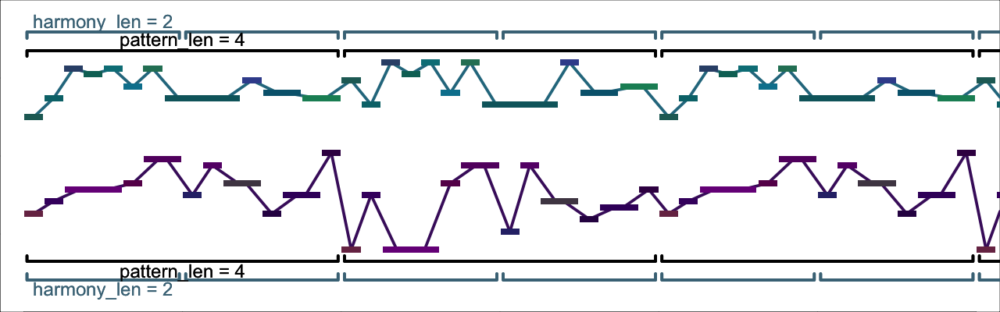
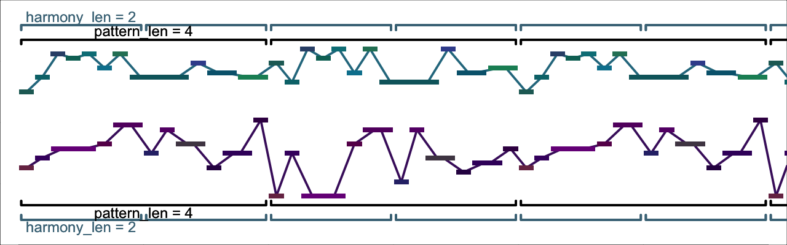
In the preceding sections, we looked at how to adjust the lengths of patterns, rhythms and harmonies. Now we’ll see how to specify chords and scales to create harmonic progressions.3
The most straightforward way is to specify all chords and scales explicitly. As a first example, I’ve specified one of the most (over?-)used chord progressions in pop music, the I-V-vi-IV progression, in C major. The results are in docs/examples/harmony_example1.py. The relevant lines in harmony_example1.py are
"foot_pcs": ("C", "G", "A", "F"),
"chords": ("MAJOR_TRIAD", "MAJOR_TRIAD", "MINOR_TRIAD", "MAJOR_TRIAD"),
"scales": ("MAJOR_SCALE", "MIXOLYDIAN", "AEOLIAN", "LYDIAN"),Example: docs/examples/harmony_example1.py

There’s a lot to explain here:
"C" and "MAJOR_TRIAD" name constants that are defined in src\er_constants.py. If you know any music theory, the meaning of the constants above shouldn’t require any further explanation now. TODO document er_constants and add a link to it hereTODO document "foots" and add a link hereWe can easily put the progression into another key by changing foot_pcs. For instance, here it is in E major:
"foot_pcs": ("E", "B", "C#", "A"),
"chords": ("MAJOR_TRIAD", "MAJOR_TRIAD", "MINOR_TRIAD", "MAJOR_TRIAD"),
"scales": ("MAJOR_SCALE", "MIXOLYDIAN", "AEOLIAN", "LYDIAN"),There are no constaints on foot_pcs, so we can get a different progression by changing foot_pcs arbitrarily. For example, in docs/examples/harmony_example2.py I’ve changed the middle two members of foot_pcs to create a more chromatic progression:
"foot_pcs": ("E", "G", "D", "A"), # was ("E", "B", "C#", "A")
"chords": ("MAJOR_TRIAD", "MAJOR_TRIAD", "MINOR_TRIAD", "MAJOR_TRIAD"),
"scales": ("MAJOR_SCALE", "MIXOLYDIAN", "AEOLIAN", "LYDIAN"),Example: docs/examples/harmony_example2.py

There are, however, two important constraints on chords and scales.
chords must have the same number of pitch-classes, and all the items of scales must as well. This means, for example, you can’t go from a major triad to a seventh chord, or from a major scale to a whole-tone scale. (You can, however, use scales or chords with any number of pitch-classes you like—as long as that number remains the same.) There is a technical reason for this constraint, (namely, that the script works by finding bijective voice-leadings between chords and scales), but in the longterm, I would very much like to remove it."MAJOR_TRIAD" will work with "MAJOR_SCALE", "MIXOLYDIAN", or any other scale that contains a major triad beginning on its first pitch"MAJOR_TRIAD" will not work with "AEOLIAN", "DORIAN", etc., because these scales contain a minor triad beginning on their first pitchBoth chords and scales will be looped through if they are shorter than foot_pcs. docs/examples/harmony_example3.py illustrates with the following short loop:
"foot_pcs": ("E", "G"),
"chords": ("MAJOR_TRIAD",), # the trailing commas before the parentheses
"scales": ("MIXOLYDIAN",), # are necessary!Example: docs/examples/harmony_example3.py

chords and scales do not have to be the same length as docs/examples/harmony_example4.py demonstrates:
"foot_pcs": ("E", "G", "E", "C"),
"chords": ("MAJOR_TRIAD",),
"scales": ("MIXOLYDIAN", "LYDIAN"),Example: docs/examples/harmony_example4.py
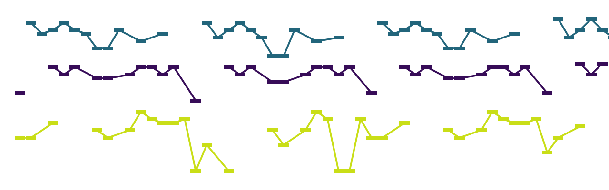
So far, the length of the progression has always been taken implicitly from the length of foot_pcs. But it is also possible to set the length of the progression explicitly, using num_harmonies, as in docs/examples/harmony_example5.py. Doing so allows us to create “pedal points” on a repeated bass note:
"num_harmonies": 4,
"foot_pcs": ("D",),
# This example also illustrates a strategy for simulating mixing seventh
# chords with triads, using incomplete seventh chords.
"chords": ("MAJOR_7TH_NO5", "DOMINANT_7TH_NO3", "MAJOR_64", "MAJOR_63"),
"scales": ("MAJOR_SCALE", "MIXOLYDIAN", "DORIAN", "AEOLIAN"),Example: docs/examples/harmony_example5.py 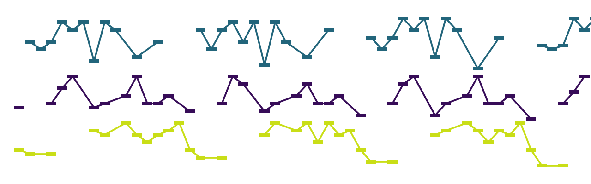
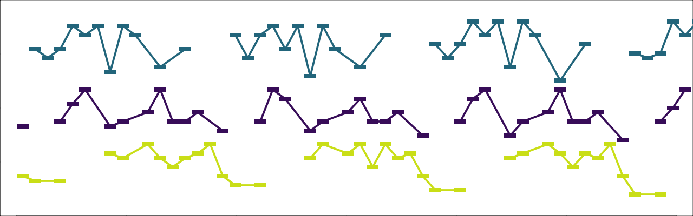
Another useful setting for creating harmonic progressions is interval_cycle. If we pass interval_cycle to the script, then any values of foot_pcs beyond the first are ignored. Instead, the progression of foot_pcs is created by repeatedly progressing upwards by interval_cycle. See docs/examples/harmony_example6.py:
"num_harmonies": 4,
"interval_cycle": "PERFECT_4TH",
"foot_pcs": ("Eb",),
# The preceding three lines are equivalent to:
# `"foot_pcs": ("Eb", "Ab", "Db", "Gb")`
"chords": ("MAJOR_TRIAD",),
"scales": ("MAJOR_SCALE",),Example: docs/examples/harmony_example6.py
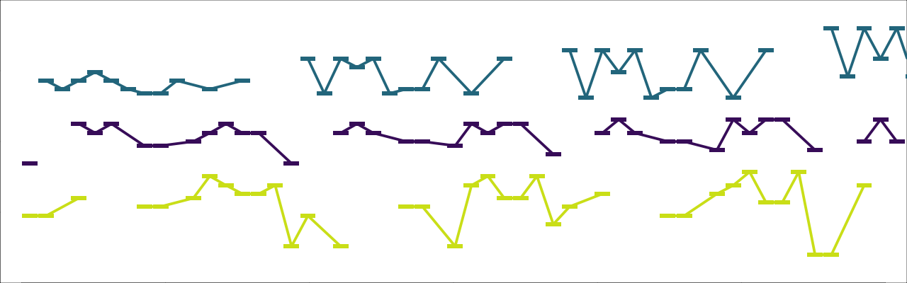
interval_cycle can also consist of more than one interval, as in docs/examples/harmony_example7.py. (Note that, since the intervals in interval_cycle are always understood upwards, "MINOR_6TH" in this example is equivalent to a descending major third.)
"num_harmonies": 4,
"interval_cycle": ("PERFECT_4TH", "MINOR_6TH"),
"foot_pcs": ("Eb",),
# The preceding three lines are equivalent to:
# `"foot_pcs": ("Eb", "Ab", "E", "A")`
"chords": ("MAJOR_TRIAD",),
"scales": ("MAJOR_SCALE",),Example: docs/examples/harmony_example7.py

Before concluding this introduction to specifying harmonies, I should add a few words about what the script actually does with chords and scales.
scales are used unconditionally: during each harmony, pitches are drawn exclusively from the associated scale. When a pattern is voice-led from one harmony to another, a bijective mapping is effected between the associated scales.chords is more contingent. The most important relevant settings are
chord_tone_selection is True, then when constructing the initial pattern, the script probabilistically decides whether each note should be a chord-tone (according to parameters that you specify).voice_lead_chord_tones is True, then when voice-leading the pattern over subsequent harmonies, the script will ensure that chord-tones are mapped to chord-tones (and non-chord-tones to non-chord-tones).In the preceding examples of this section both chord_tone_selection and voice_lead_chord_tones have been True. As a contrasting illustration, docs/examples/harmony_example8.py repeats the settings of docs/examples/harmony_example6.py, with the sole difference that voice_lead_chord_tones is now set to False. (Note, however, that the settings force_foot_in_bass = True and extend_bass_range_for_foots = 7 in examples/harmony_example_base.py are still causing the foot of each scale/chord to sound on beat one of each harmony.)
Example: docs/examples/harmony_example8.py 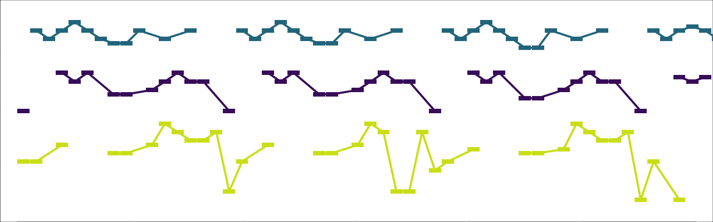
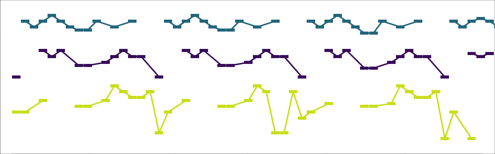
docs/examples/harmony_example9.py is similar, but with chord_tone_selection = False as well.
Example: docs/examples/harmony_example9.py

TODO
You can find the settings files that generated all the examples in this section in the docs/examples folder. docs/examples/example_base.py is shared among each example. So you can build the first example with the command python3 efficient_rhythms.py --settings docs/examples/example_base.py docs/examples/example1.py; for subsequent examples, just replace example1.py with the appropriate file.↩︎
The music-theoretically fastidious among you may have observed that these examples contain plentiful parallel fifths (for example, the first two sixteenth-notes in docs/examples/example2.py). If desired, parallel fifths could be avoided by including 7 in the sequence provided to the setting prohibit_parallels.↩︎
The settings files that generated the examples in this section all begin with harmony_example and are found in the docs/examples folder. docs/examples/harmony_example_base.py is shared among each example. So you can build the first example with the command python3 efficient_rhythms.py --settings docs/examples/harmony_example_base.py docs/examples/harmony_example1.py.↩︎